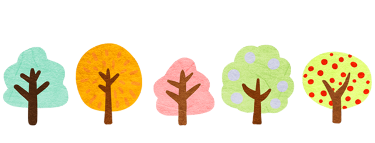

I am Qiyang Yan
a Software Engineer at KLA
Hello.
I am currently a Software Engineer at KLA. I am passionate about programming and love to solve problems.
My CV
Work Experience
KLA, Milpitas, CA, USA Aug 2022 - Now
Software Engineer
Play a technical leader role in the test automation team.
Develop a web-application which can do automated root causes analyzes for failed automation tests using React, .NET and MSSQL which saves more than 70% manual efforts of test automation engineers. Paper submitted for the company-wide conference.
Develop and maintain automation infrastructure systems including developing new features of current tools, fixing bugs for the current tools and developing new tools. Three new tools have been developed to improve the automation system.
Create and maintain automation pipeline in Jenkins for automation testing and deploy Jenkins on linux servers using Docker.
Generate Coded UI tests to test the Wafer Inspection system. Train new test automation engineers on writing automation tests.
Manage all Virtual Machines for the group including create and configure VMs, setup Jenkins in VMs and maintain VMs status.
Pacific Northwest National Laboratory, Richland, WA, USA Aug 2021 - July 2022
Post Doctorate Research Assistant (Computational Science)
Develop the object oriented based aerosol packages and an API for the aerosol module of a climate model.
Conduct code refactoring of an aerosol module from a Fortran-based global climate model and translate the code to C++ with improved numerical methods and GPU computation capability in cooperation with an 8-member multi-institutional interdisciplinary team (software engineers and domain scientists) and improve the computing speed by 50%.
Design and conduct unit tests on the refactored module.

Education
Georgia Institute of Technology, Atlanta, GA, USA
M.S. in Computer Science 2023
Ph.D. in Atmospheric Sciences, minor in Statistics 2021
University, Lanzhou, Gansu, China
B.S. in Atmospheric Sciences 2016

Skills
Programming language: Python, C#, Java, C++, JavaScript, HTML, CSS, SQL, Bash, YAML
System/Tool: REST API, Linux, Git, Docker, Jenkins, Node, jQuery, Flask, MSSQL, VM, React, Sprint, CMake
Courses: Software Development Process, Machine Learning for Trading, Network Security, Database Systems, Graduate Algorithms, Introduction to Health Informatics, Computer Networks,

Projects
Auto Root Cause Analyzes(Project at KLA)
• Develop a web-application for test automation engineers to do automated root cause analyzes and saves more than 70% manual work of test automation engineers.
• Parse the log of failed tests and extract the unique failing signatures of each test logs and save to the Microsoft SQL server.
• Recommend existing/filed bugs(find the root cause) based on the failing signatures of the test. File new bugs automatically for testing engineers if this bug is a new bug.
• Implement frontend view using React and .NET framework for the backend via C# to realize data exchange using REST API.
• Generate a report for past tests of selected products and dates which contains the test results, failing signatures, failure root causes, bug ID and other important informations
LessTension(Course project)
• Developed a user-friendly full-stack web application for people with hypertension to manage their health.
• Enabled users to book doctor's appointments, track pressure readings, record daily exercise and diet.
• Implemented the frontend view via React framework, HTML, CSS and JavaScript and utilized Python Flask as the backend framework.
• Constructed a database using MSSQL and using the REST API to perform CRUD to enable efficient data exchange between the backend and frontend.
GameTrade Hub(Course project)
• Developed a web application to create a platform for people to exchange their used games.
• Enabled users to list items, propose trades, perform trades with people nearby.
• Implemented the frontend view via React, Node.JS, HTML, CSS and utilized backend framework Flask.
• Constructed a database using MSSQL and using the REST API to exchange between the backend and frontend.
Android Best Job Offer App(Course project)
• Developed an Android App that helps users to find their best offer via comparing job base salaries, compensations, location and other benefits based on the user’s comparison settings in Android Studio using Java.
• Analyzed requirements and designed use-case model, UML diagrams and the user interface.
• Implemented CRUD functionalities to manage offer data using SQLite. Performed unit tests via JUnit with 85% coverage.
Get In Touch
I am currently looking for a software engineer position in bay area. If you are interested in my background and experiences, please send me a message.
CONTACT ME